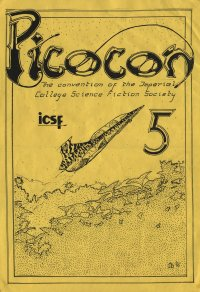

Picocon 5 - 1987
|  |
| ||||||||||||||||||||||||
John Salmon presided over this Picocon which was held in the Biology Seminar rooms. Apparently ICSF beat Cambridge in the quiz, Dangermouse episodes, Scanners and The Hunger were all shown and John Brunner and Dave Hardy were the special guests.
From Felix, Friday February 20th 1987...
Picocon is the event of the year, it's the convention of the Science Fiction Society of Imperial College. As the name suggests it is a small convention and it lasts for only twelve hours but during this time there will be speakers, videos, quizzes, games, RPGs and slide shows
This is the fifth Picocon held at Imperial College. Over the past years we have had many top quality speakers including, for example, Dave Langford and Brian Stableford. This year our guests of honour are author John Brunner and space artist Dave Hardy. Both men are British and are highly esteemed in their separate fields of work (which are generally dominated by Americans).
John Brunner has written several books, mostly science fiction and has won several awards including the prestigious Hugo award for Stand on Zanzibar (1968) and the Nebula award for The Sheep Look Up (1972). He has written professionally for over thirty years and has contributed much to both the intellectual and lighter sides of science fiction. His stalk should be very entertaining and provoke much discussion.
Britain has produced a few talented science fiction artists. One of the latest and most noted artists is David Hardy. Along with Patrick Moore, he wrote Challenge of the Stars which he illustrated using a vivid sense of imagination and scientific accuracy. As well as speaking about science fiction art in general, Mr Hardy will also be giving a colourful slideshow.
As well as our guests of honour, we have invited many other authors, science fiction and fantasy buffs who should be popping in from the real world (or unreal world as the case may be). After mingling with the 'rich and infamous' (no I don't mean the WellSoc and Consoc committee members), you could join in with the fantasy and wargames. Hopefully, we should be running Car Wars or Paranoia and other role playing games.
Throughout the day, various video films will be shown. These will include Dark Star, The Hunger and Scanners (especially for all you bloodthirsty non-vegetarians). Last year, the ICSF challenged the Cambridge Science Fiction Society to a trial of charades and hack questions, we thrashed them in one game and narrowly lost another. This year our superconductivity - HAL - computer like team intend to demonstrate their superiority with style, so come along and give them your support.
Refreshments can be bought and will include drinks, sandwiches and pizzas.
You don't have to be a science fiction or fantasy hack to come to attend Picocon, The convention starts at 10am and finishes at 10.00pm on Saturday February 21st, and is held in the Biology Seminar rooms (old Bot-Zoo common rooms) in Beit Arch. Entrance will be £2.50 non members and £2 for members.
| Previous page | Contents | Next Page |